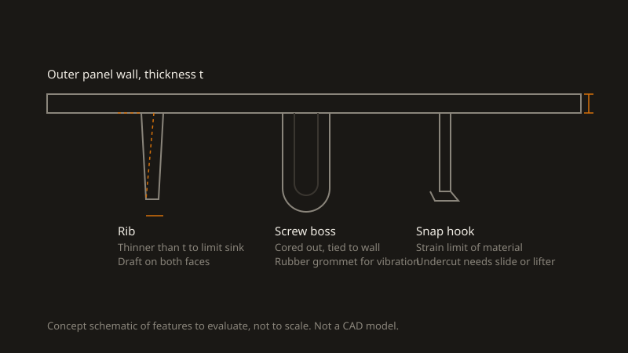

- Project
Plastic motorcycle body parts
- Type
- Personal project
- Year
- 2026
- My role
- Individual
- Material
- ABS, PC/ABS, PP compared
- Process
- Injection moulding (design study), Fusion 360 simulation
- Status
- In progress
A material comparison and moulding design study for plastic side covers and fairing parts. Analysis stage: no test results yet.
Problem and constraints
Side covers and fairing parts on motorcycles are injection-moulded plastic. They crack at mounting points, fade in the sun and are often no longer sold for older bikes. I want to understand why they fail and how I would design and specify a replacement.
- Impact resistance, also in cold weather.
- UV and weather resistance, and a surface that can be painted.
- Heat near the engine and exhaust.
- Mounting points that survive vibration.
- A shape that can be moulded: even walls, draft, no needless undercuts.
TODO: name the bike and the part you are studying
My role
Personal project, done on my own: material research, CAD, simulation and prototyping.
Method
- Failure review. Look at where existing parts crack and fade, and link each failure to a load or exposure.
- Material selection. Compare ABS, PC/ABS and PP on impact strength, heat deflection temperature, UV resistance, paintability and cost, using datasheet values.
- Moulding design. Redesign the part for injection moulding: constant wall thickness, draft on all faces in the pull direction, ribs thinner than the wall to avoid sink marks, cored screw bosses.
- Mounting. Compare a screw boss with a rubber grommet against a snap hook, and check the snap hook strain against the material limit.
- Simulation. Static stress on a mounting tab in Fusion 360, then a printed prototype for fit.

Results
TODO: add the material comparison table with sourced datasheet values, the chosen material and why, CAD renders, simulation results and photos
What I would change
TODO: fill in after the analysis
Files
- TODO: add the material comparison as a PDF